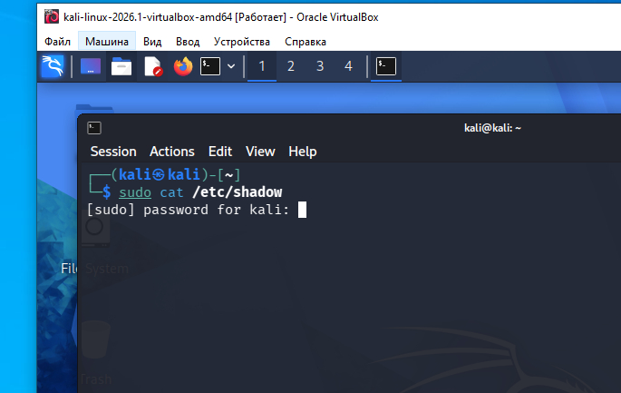
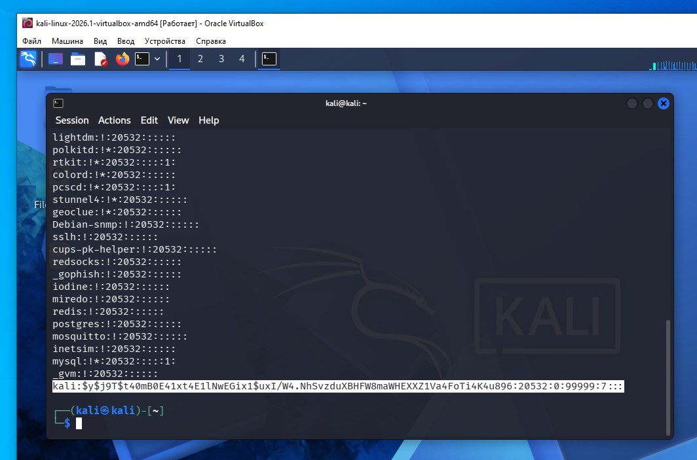
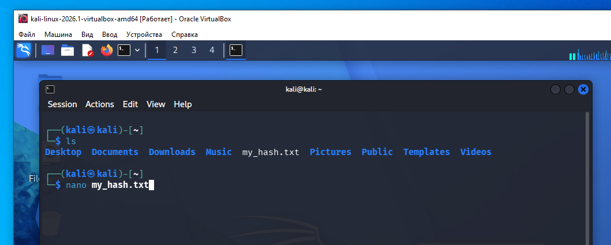
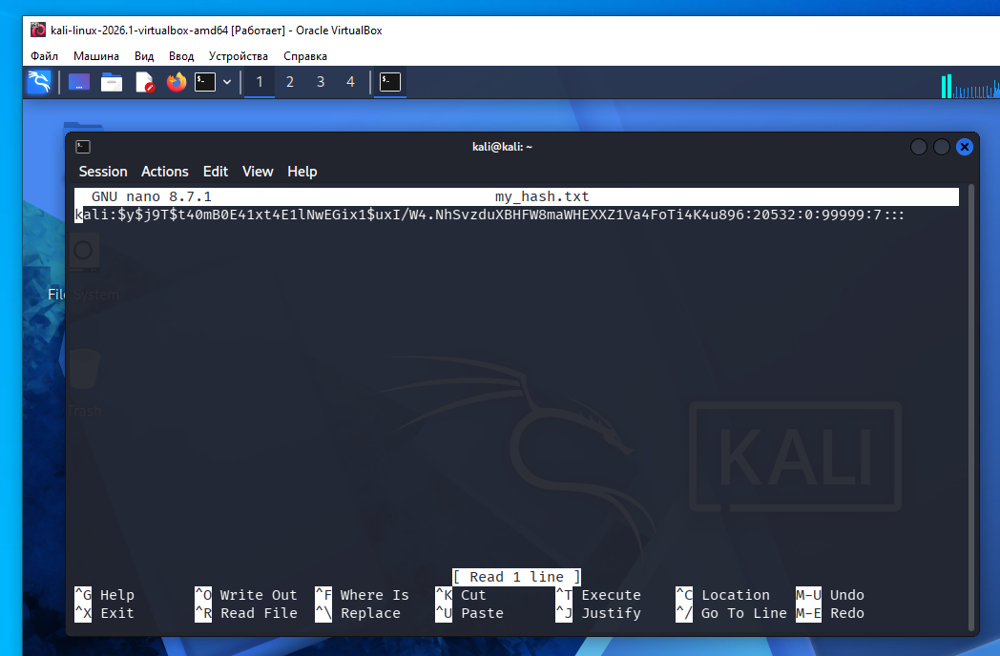
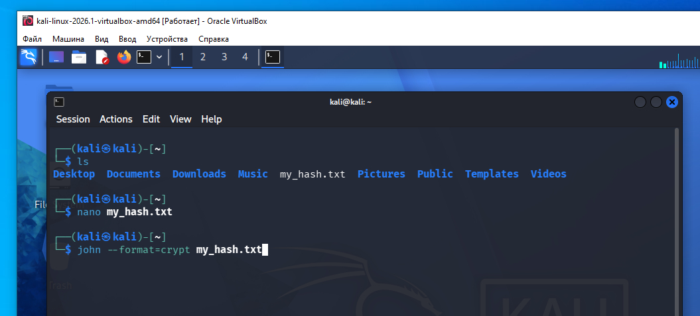
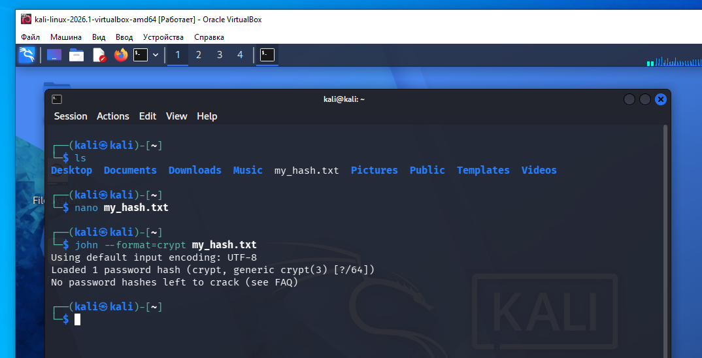
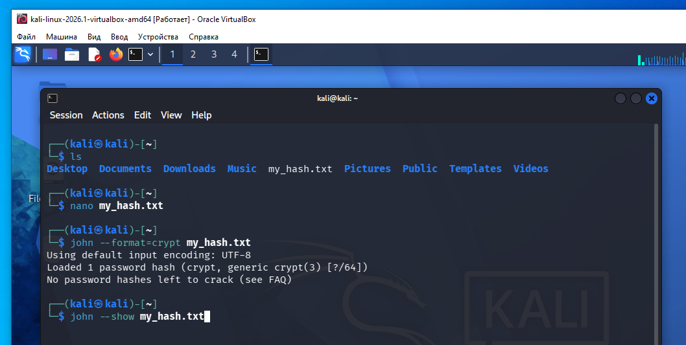
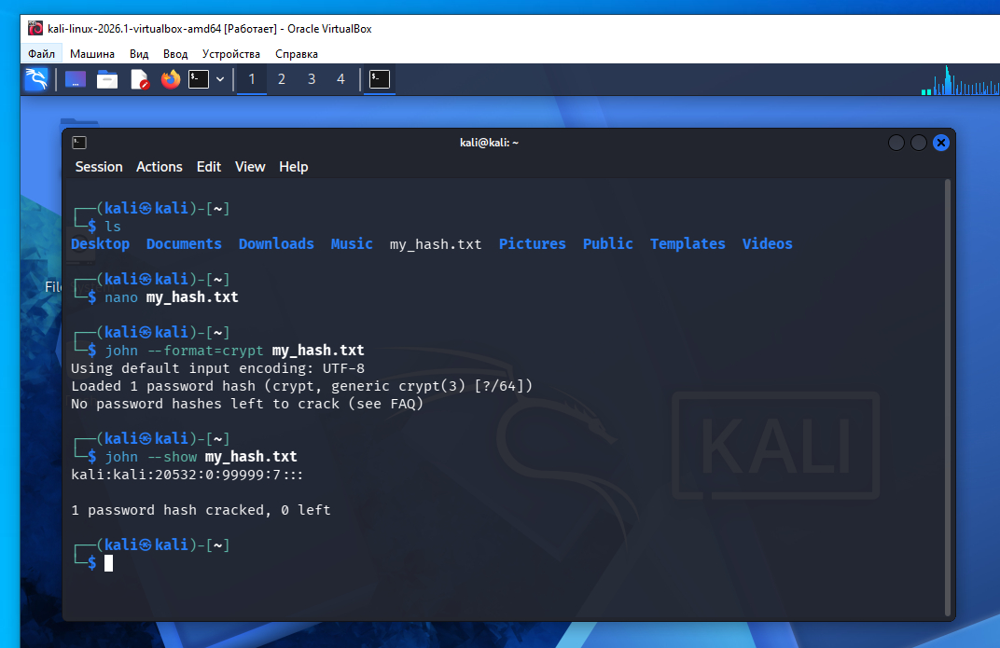

К примеру у нас есть пароль:
hello1
Зайдем на сайт https://www.miraclesalad.com/webtools/md5.php введем это слово и получим md5 хеш для этого пароля:
203ad5ffa1d7c650ad681fdff3965cd2
MD5 принимает входные данные практически любой длины (от пустой строки до очень больших объемов данных). Ограничение 32 символа относится только к результату, а не к тому, что можно вводить.
То есть мы через алгоритм md5 пропускаем слово hello1 и в результате получаем хеш 32 символа - 203ad5ffa1d7c650ad681fdff3965cd2.
Хеширование — это односторонняя функция. Или еще говорят- однонаправленная. Это означает: Исходные данные преобразовать в хеш — вычислить легко. Хеш преобразовать в исходные данные — восстановить невозможно (или практически невозможно для криптографических хеш-функций).
Наш пример:
hello1 -> 203ad5ffa1d7c650ad681fdff3965cd2
По этому хешу 203ad5ffa1d7c650ad681fdff3965cd2 нельзя математически вычислить слово hello1.
Однако есть важная особенность: Если исходная строка простая (например, password, 123456, hello), ее могут найти не расшифровкой, а подбором: вычисляют MD5 для миллионов известных строк и сравнивают с вашим хешем.
Таким образом мы уже немножечко познакомились с алгоритмом хеширования md5.
Вот самые известные алгоритмы хеширования:
Устаревшие (не рекомендуются для защиты паролей) MD5 — 128-битный хеш, считается небезопасным. SHA-1 — 160-битный хеш, также устарел. RIPEMD-160 — 160-битный хеш. Современные криптографические хеш-функции SHA-256 — 256-битный хеш, широко используется. SHA-384 — 384-битный хеш. SHA-512 — 512-битный хеш. SHA-3 — новое семейство хеш-функций. BLAKE2 — очень быстрый и безопасный алгоритм. BLAKE3 — современный высокопроизводительный алгоритм. Для хранения паролей Это не просто хеш-функции, а алгоритмы, специально разработанные для безопасного хранения паролей: bcrypt scrypt Argon2 — победитель конкурса Password Hashing Competition, считается одним из лучших вариантов. На практике сегодня: для проверки целостности файлов часто используют SHA-256 или SHA-512; для хранения паролей — Argon2, bcrypt или scrypt; MD5 и SHA-1 считаются устаревшими и для новых систем не рекомендуются.
К примеру вы регистрируетесь на сайте в интернете, и вас просят задать пароль для входа в ваш профиль на сайте. Для пароля вы решили взять слово hello1. В конце регистрации на странице регистрации вы нажимаете кнопку "Завершить регистрацию" и ваш пароль попадает на сервер. Сервер делает с него хеш. То есть сервер пропускает ваш пароль через хеш функцию, хеш алгоритм - и результат, хеш вашего пароля, записывает себе в базу для хранения.
То есть, на серверах ваши пароли храняться не в открытом виде- а в виде хешей. Даже администраторы этого сервера не знаю какой у вас пароль.
Этот способ- хранить на сервере хеши паролей, а не сами пароли в открытом виде- очень удачный, так как в случае если злоумышленники взломали защиту сервера и украли файл паролей - то пароли им все равно не известны, злоумышленники видят только хеши паролей пользователей этого сервера. Таким образом зайти за сайт в вашу учетную запись они не могут - если в форме входа на сайте они укажут ваш хеш - это бессмысленно и входа в систему не произойдет, так системе нужен пароль в открытом виде, а не его хеш.
Таким образом сервера в интернете хранят пароли в виде хешей.
Что происходит когда вы заполнили форму входа на сайт, указали ваш логин и пароль в открытом виде? Сервер получает ваш пароль в открытом виде, еще раз пропускает его через хеш аглоритм, и затем результат сравнивает с тем что у него храниться в базе. Если хеш пароля с формы входа совпадает с хешем пароля который хранится в базе- вам разрешается вход в вашу учентую запись, то есть успешно зайдете к себе на страницу если это соц.сеть. При входе вы указываете логин, по этому логину в своей базе данных сервер ищет хеш, и сравнивает с тем хешем пароля который вы указали в форме входа.
Тут есть один момент. Злоумышленники украли с сервера файл паролей, пароли в виде хешей, но есть способ получить эти пароли в обычном виде.
К примеру, злоумышленник может сам создать приложение, или использовать готовое приложение, которое работает по такому алгоритму:
Вот как это происходит на практике, сессия терминала из Kali Linux ниже. Запускаем терминал Kali вводим команду как на скриншоте:

sudo cat /etc/shadow
Команда делает следующее:
Для Kali Linux пароль пуперпользователя слово kali (с маленькой буквы).
После выполнения команды со скриншота вывод в терминал такой:

Сейчас нас интересует последняя строка, я ее выделил на скриншоте.
kali:$y$j9T$t40mB0E41xt4E1lNwEGix1$uxI/W4.NhSvzduXBHFW8maWHEXXZ1Va4FoTi4K4u896:20532:0:99999:7:::
Это строка из /etc/shadow, и она уже содержит хеш пароля в формате yescrypt.
Структура строки /etc/shadow нас в данный момент не интересует, самое важное что первое слово kali - это логин. Далее идет тип хеша - $y$ - это yescrypt. Это современный алгоритм, который пришёл на смену: SHA-512 crypt ($6$) и bcrypt ($2y$). Далее сам хеш - j9T$t40mB0E41xt4E1lNwEGix1$uxI/W4.NhSvzduXBHFW8maWHEXXZ1Va4FoTi4K4u896 - 71 символ - восстановить пароль напрямую невозможно, можно только пытаться подбирать (если слабый пароль).
Какие бывают идентификаторы алгоритма хеширования в файле /etc/shadow.
Идентификаторы алгоритма хеширования: | Префикс | Алгоритм | | ------------- | ---------------------------- | | `$1$` | MD5 crypt | | `$2a$ / $2y$` | bcrypt | | `$5$` | SHA-256 crypt | | `$6$` | SHA-512 crypt | | `$y$` | yescrypt (новый Linux, Kali) |
После старта системы Kali в форме входа запрашивается логин/пароль, и для Kali это просто повтороение слова: kali логин, kali пароль. Таким образом сейчас мы видим, что разбираемая нами строка из файла /etc/shadow - это логин и пароль учетной записи входа в Kali, и, по логике, пароль должен быть тоже слово kali. Давайте проверим наше предположение. Воспользуемся программой John The Ripper которая уже есть в поставке Kali Linux.
Из файла паролей /etc/shadow мы знаем что это тип хеша yescrypt. Укажем это при запуске John The Ripper для подбора хеша.
Для начала я скопировал целиком эту строку из файла паролей:
kali:$y$j9T$t40mB0E41xt4E1lNwEGix1$uxI/W4.NhSvzduXBHFW8maWHEXXZ1Va4FoTi4K4u896:20532:0:99999:7:::
Я положил ее в текстовый файл в моем домашнем каталоге Kali Linux. Текстовый файл я назвал my_hash.txt и его содержимое - строка из файла паролей.


Команда на расшифровку хеша следующая, в команде мы указали тип хеша yescrypt:
john --format=crypt my_hash.txt




Как видим программа John The Ripper расшифровала пароль - слово kali - и он совпадает с паролем который система требует в форме входа Kali Linux.
Но хочу заметить, данный пароль был подобран по словарю, не методом перебора.